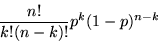
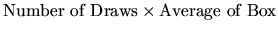
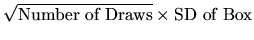
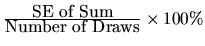
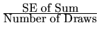
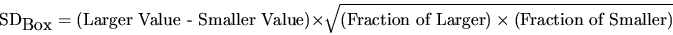
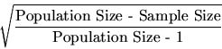
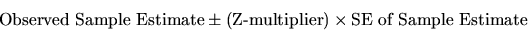

Let A and B denote the names of any two events.
Multiplication Rule
The chance that both A and B happen equals the chance that A happens multiplied
by the conditional chance that B happens given that A has happened.
Independence
A and B are independent if (and only if) the chance B happens given that
A has happened is equal to the unconditional chance that B happens.
With Replacement
When drawing at random, with replacement, the different draws
are independent.
Mutually Exclusive
A and B are mutally exclusive if they cannot both happen together.
Addition Rule
If A and B are mutually exclusive, then the chance that one happens is the
sum of their chances.
Expanded Addition Rule
If A and B are not mutually exclusive, then the chance that at
least one happens is the sum of their chances minus the chance that
both happen.
Opposites Rule
The chance of an event plus the chance of its opposite is 1 (or 100%).
Binomial Formula
The chance that an event will occur exactly k
times in n
independent trials, with the chance of occurrence equal to
p on all trials is:

Expected Values and SEs
When drawing at random with replacement from a box of numbered tickets, the
expected values and SEs of the sample sum, percentage, or average are:
| Sample Estimate | Expected Value | Standard Error |
| Sum |
 |
 |
| Percent | Box Percentage |
 |
| Average | Average of Box |
 |
SD of 2-value Box
If box (or sample) contains only two different values, the SD is given by:

Correction Factor
When sampling at random without replacement, the SEs above need to be
multiplied by the finite correction factor, which is:

Confidence Intervals
The generic formula for a confidence interval is:
